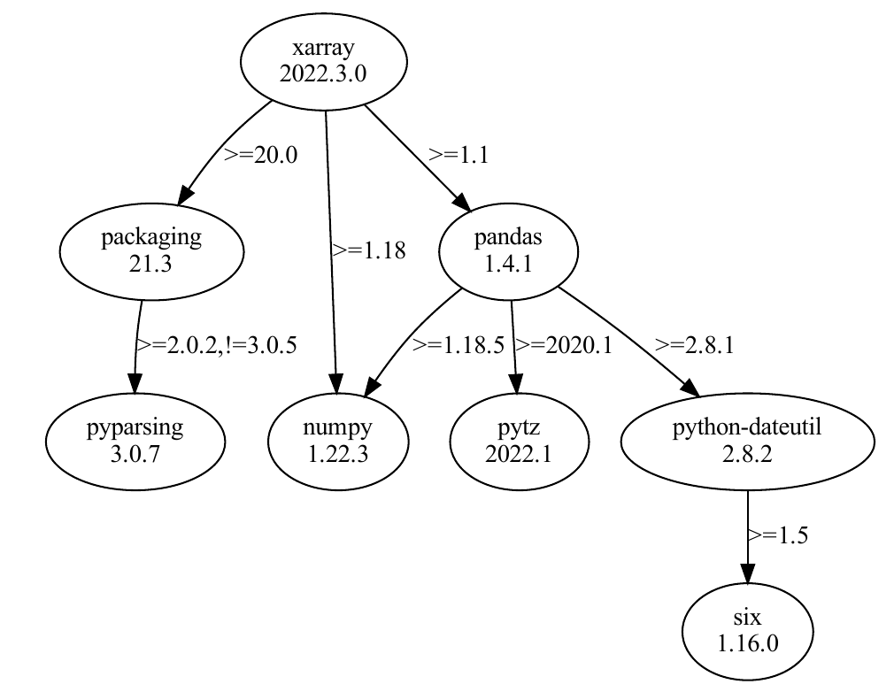

Use GenomeDK
An introduction to the GDK system and basic commands https://hds-sandbox.github.io/GDKworkshops
Samuele Soraggi
Health Data Science sandbox, BiRC
Dan Søndergaard
GenomeDK, Health
2025-04-11
Some background
These slides are both a presentation and a small reference manual
We will try out some commands during the workshop
Official reference documentation: genome.au.dk
When you need to ask for help
Practical help:
Samuele (BiRC, MBG) - samuele@birc.au.dk
Drop in hours:
- Bioinformatics Cafe: https://abc.au.dk, abc@au.dk
- Samuele (BiRC, MBG) - samuele@birc.au.dk
General mail for assistance
support@genome.au.dk
Program
10:00-11:00: What is GenomeDK, File System, virtual environments
11:00-12:00: Exercise: access interface, new environment, transfer data, interactive job
12:45-13:15: queueing system and jobs, estimate resource usage
13:15-14:00: Send out your first job with
slurm, estimate resource usage
Get the slides
Webpage: https://hds-sandbox.github.io/GDKworkshops/

Slides will always be up to date in this webpage
Navigate the slides
Software for command line
The basic softwares

Customizable

GenomeDK’s ABC
Learn your way around the basics of the GenomeDK cluster.
Infrastructure
GenomeDK is a computing cluster, i.e. a set of interconnected computers (nodes). GenomeDK has:
- computing nodes used for running programs (~15000 cores)
- storage nodes storing data in many hard drives (~23 PiB)
- a network making nodes talk to each other
- a frontend node from which you can send your programs to a node to be executed
- a queueing system called slurm to prioritize the users’ program to be run

Access
Creating an account happens through this form at genome.au.dk


Logging into GenomeDK happens through the command 1
When first logged in, setup the 2-factor authentication by
showing a QR-code with the command
scanning it with your phone’s Authenticator app 2.
Access without password
It is nice to avoid writing the password at every access. If you are on the cluster, exit from it to go back to your local computer
Now we set up a public-key authentication. We generate a key pair (public and private):
Always press Enter and do not insert any password when asked.
and create a folder on the cluster called .ssh to contain the public key
and finally send the public key to the cluster, into the file authorized_keys
After this, your local private key will be tested against GenomeDK’s public key every time you log in, without you needing to write a password.
File System (FS) on GenomeDK
- Directory structure
- Absolute and Relative Paths
- important folders
- navigate the FS on the command line
How the FS is organized
Folders and files follow a tree-like structure
/is the root folder of the filesystem - nothing is above that- the FS is shared across all machines and available to all users
homeandfaststorageare two of the folders in the root- projects are in
/faststorage/projectand linked to your home

Exercise:
Log in: ssh USERNAME@login.genome.au.dk
Note
Run a command = Type a command + Enter
- Run
pwd, You should see your home folder:/home/USERNAME/home/USERNAMEis an example of path.pwdshows your current folder (WD, Working Directory)- you can write paths starting FROM the WD!
Run
ls .to show the content of your WD (the dot.)Run
mkdir -p GDKintroto create aGDKintrofolderRun
echo "hello" > ./GDKintro/file.txtto write hello in a fileUse
ls ./GDKintroto see if the text file is there.
Relative and absolute paths
/home/USERNAMEstarts from the root/. It is an absolute path../GDKintrostarts from the WD. It is a relative path.
Look at the File system tree and answer to the following questions:
Something more about your home
After log in, you will find yourself into your private home folder, denoted by ~ or equivalently /home/username. Your prompt will look like this:
which follows the format [username@node current_folder].
Warning
- Do not fill up your home folder with data. It has a limited amount of storage (a quota of 100GB).
- Your home folder is only private to you
Exercise cont’d
We now set the WD into GDKintro and remove all text files in it. Then we download a zipped fastq file, unzip it, and print a preview!
Some notes about the commands
rm *.txtremoves all files ending with.txt. The symbol*is a wildcard for the file nameForever away
There is no trash bin - removed files are lost forever - with no exception
headprints the first lines of a text file
Exercise: Read files
Useful utility 1: less file reader. less is perfect for exploring (big) text files: you can scroll with the arrows, and quit pressing q. Try
The very first sequence you see should be
@HISEQ_HU01:89:H7YRLADXX:1:1101:1116:2123 1:N:0:ATCACG
TCTGTGTAAATTACCCAGCCTCACGTATTCCTTTAGAGCAATGCAAAACAGACTAGACAAAAGGCTTTTAAAAGTCTA
ATCTGAGATTCCTGACCAAATGT
+
CCCFFFFFHHHHHJJJJJJJJJJJJHIJJJJJJJJJIJJJJJJJJJJJJJJJJJJJHIJGHJIJJIJJJJJHHHHHHH
FFFFFFFEDDEEEEDDDDDDDDDThe first line is metadata, the second is the sequence, then you have an empty line (symbol +), and the quality scores (encoded by letters as in this table).
Exercise
Search online (or with less --help) how to look for a specific word in a file with less. Then visualize the data with less, and try to find if there is any sequence of ten adjacent Ns (which is, ten missing nucleotides). Then, answer the question below
Exercise: Writing on files
Useful utility 2: nano text editor. It open, edits and saves text files. Very useful for changes on the fly.
Try
nano data.fastq. Change a base in the first sequence,then press Ctrl+O to save (give it a new file name
newData.fastqand press Enter)press Ctrl+X to exit. If you use
lsyou can see the new saved file.
Package/Environment management
No preinstalled software on GenomeDK
You install and manage your software and its dependencies inside virtual environments
Virtual environments
Each project needs specific software versions dependent on each other for reproducibility - without interferring with other projects.
Definition
A virtual environment keeps project-specific softwares and their dependencies separated
A package manager is a software that can retrieve, download, install, upgrade packages easily and reliably

Exercise - Pixi
First of all, we open the desktop interface to GenomeDK at desktop.genome.au.dk. Choose the Front end for the login.
The desktop session will be operative even if you close and reopen your browser afterwards!
The terminal will work as if you logged into the frontend (The desktop is logged into the front-end node already). You can also use the browser!
Open the terminal and run the command below to install pixi:
After that, make the system recognize pixi
Change your WD with the one we created earlier, where we have the file data.fastq
Initiate a new pixi environment into the folder:
Use the file browser and open the GDKintro folder
You can see some new files. pixi.toml contains info pixi will use to create your environment.
Open pixi.toml with the text editor, and make sure you have the two channels conda-forge and bioconda. If not, modify the file so the channel list is like below.
Now get back to the terminal and install some packages. This is done easily.
It will look like this at the end
Now open the pixi.toml file. You should see all the installed packages with related information.
Conda
Conda is both a virtual environment and a package manager.
- easy to use and understand
- can handle quite big environments
- environments are easily shareable
- a large archive (Anaconda) of packages
- active community of people archiving their packages on Anaconda
Pixi
A newer virtual env. and package manager
- An upgrade of Conda in speed and stability
- Can install the same packages as conda
Exercise: Virt.Env. for Rstudio and Jupyterlab
Open the terminal and install conda with the following commands.
wget https://github.com/conda-forge/miniforge/releases/latest/download/Miniforge3-Linux-x86_64.sh -O miniforge.sh
chmod +x miniforge.sh
bash miniforge.sh -b
./miniforge3/bin/conda init bash
After a few ENTERs and YES’s you should get the installation done. Run
and doublecheck that conda works:
Configuration
You can add some default channels where to find archived packages. Here are some tipycal ones
We tell conda to consider channels in the order specified above. We also avoid opening the base environment (where conda is installed) at login.
Base environment
base is the environment containing conda itself. The current environment is in your prompt in round brackets.
We update Conda with libmamba solver - a lot faster in installing many packages at once.
Don’t touch the Base
This is the only time you should install in the base environment! You might otherwise ruin the conda installation.
Create an environment
An empty environment called test_1:
You can list all the environments available:
> # conda environments:
> #
> base * /home/samuele/miniconda3
> test_1 /home/samuele/miniconda3/envs/test_1Note
An environment is in reality a folder, which contains all installed packages and other configurations and utilities
Activate and deactivate
To use an environment we activate it:
From now on, all installed softwares and packages will be available. (test_1) is now shown in your prompt.
Deactivation happens by
Package installation
Conda puts together the dependency trees of requested packages to find all compatible dependencies versions.
Figure: A package’s dependency tree with required versions on the edges
To install a specific package in your environment, search it on anaconda.org:

Figure: search DeSeq2 for R

Figure: suggested commands to install the package
Channels
packages are archived in channels. Typical ones are conda-forge and bioconda.
conda-forge packages are often more up-to-date, but a few times show compatibility problems with other packages.
Install a few packages in the activated environment - you can always specify a version restriction to each package:
Note
To install few packages, you need more than a hundred installations! Those are all dependencies arising from the comparison of dependency trees.
Installation from a list of packages
You can export all the packages you have installed over time in your environment:
which looks like
The same command without --from-history will create a very long file with ALL dependencies:
name: test_1
channels:
- bioconda
- conda-forge
- defaults
- r
dependencies:
- _libgcc_mutex=0.1=conda_forge
- _openmp_mutex=4.5=2_gnu
- _r-mutex=1.0.1=anacondar_1
- argcomplete=3.2.2=pyhd8ed1ab_0
...This is guaranteed to work only on a system with same OS and architecture as GenomeDK (Linux and x86)!
You can use the yml file to create an environment:
conda env create -p test_1_from_file -f ./environment.yml
Environment files are very useful when you want to share environments with others, especially when the package list is long.
Good practice: You want to install a lot of packages in an environment? Clone it first! If you break something, you still have the old copy.
If installations in the cloned environment go fine, then you can remove it
and repeat the installations on the original one.
Useful links for conda:
Conda cheat sheet with all the things you can do to manage environments
Anaconda where you can search for packages
Working with Files
Moving, Downloading, Manipulating and other basic operation on files.
File formats
Many files you use in bioinformatics are nothing else than text files which are written in a specific matter. This specific way of arranging the text in the files gives you many of the file formats you encounter when doing bioinformatics.
Note
Some file formats are encoded differently than with plain ASCII text, and cannot usually be seen with a text editor.
fastq file formatbam file format is binary and can be read with the samtools software.Let’s get ready. Be sure you are in myFolder (use pwd) - Otherwise use
Now, you can decompress the file data.fastq.gz, which is in gz compressed format:
Tip
For compressing a file into gz format, you can use gzip. For compressing and decompressing in zip format, you have also the commands zip and unzip.
Less for reading files
less is perfect for reading text files: you can scroll with the arrows, and quit pressing q. Try
The very first sequence you see should be
@HISEQ_HU01:89:H7YRLADXX:1:1101:1116:2123 1:N:0:ATCACG
TCTGTGTAAATTACCCAGCCTCACGTATTCCTTTAGAGCAATGCAAAACAGACTAGACAAAAGGCTTTTAAAAGTCTA
ATCTGAGATTCCTGACCAAATGT
+
CCCFFFFFHHHHHJJJJJJJJJJJJHIJJJJJJJJJIJJJJJJJJJJJJJJJJJJJHIJGHJIJJIJJJJJHHHHHHH
FFFFFFFEDDEEEEDDDDDDDDDThe first line is metadata, the second is the sequence, then you have an empty line (symbol +), and the quality scores (encoded by letters as in this table).
Exercise
Search online (or with less --help) how to look for a specific word in a file with less. Then visualize the data with less, and try to find if there is any sequence of ten adjacent Ns (which is, ten missing nucleotides). Then, answer the question below
Counting
How many lines are there in your file? The command wc can show that to you:
The file has 100000 lines, or 25000 sequences (each sequence is defined by 4 lines).
Tip
wc has many functionalities. As always, look for the manual or examples to see how you can use it in other many ways.
Copy and Move
cp can copy one or more files - we use it on our data:
mv moves a file into another folder - here we move it into our WD, which simply changes its filename:
Use now ls -lah and you will see two files of identical size and different creation dates.
Well, we changed our mind and do not want a copy of our data. Remove it with
Forever away
There is no trash bin - removed files are lost forever - with no exception
Writing on a file
Write something on a file using >:
prints out the first four lines of the data into smallFile.fastq.
Warning
Using again > will overwrite the file!
Print out on the screen:
Avoid overwriting by appending with >>:
appends the last 4 lines of the data to smallFile.fastq. Check again using cat or wc -l.
Piping
You can create small pipelines directly on the shell with the symbol |. The output of a command and send it to the next command when you have | in between. For example,
finds the pattern NNNNN in the data.
How to find it in the first hundred sequences? Easy! we pipe head into grep:
The output of that pipe was a small output on screen - but outputs can be huge! We could count the number of sequences by piping again into wc!
Compendium for file manipulation
List Files and Directories
ls: List files and directories in the current directory.ls -l: List in long format (detailed information).ls -a: List all files, including hidden ones (starting with.).ls -lh: List with human-readable file sizes (e.g., KB, MB).ls -R: Recursively list files in directories and subdirectories.
Copy Files and Directories
cp source_file destination: Copy a file to a destination.cp file1 file2 dir/: Copy multiple files to a directory.cp -r dir1 dir2: Recursively copy a directory and its contents.
Move (or Rename) Files and Directories
mv source_file destination: Move a file to a new location or rename it.mv file1 file2 dir/: Move multiple files to a directory.mv oldname newname: Rename a file or directory.
Remove Files and Directories
rm file: Remove a file.rm -f file: Force remove a file (suppress confirmation).rm -r dir: Recursively remove a directory and its contents.rm -rf dir: Forcefully and recursively remove a directory and its contents (use with caution).
Create Directories
mkdir dir_name: Create a new directory.mkdir -p parent_dir/child_dir: Create a directory with parent directories as needed.
Change File Permissions
chmod 644 file: Set read/write for owner, and read-only for group and others.chmod 755 file: Set read/write/execute for owner, and read/execute for group and others.chmod +x file: Add execute permission to a file.chmod -R 755 dir: Recursively change permissions for a directory and its contents.
Change File Ownership
chown user file: Change the ownership of a file.chown user:group file: Change the owner and group of a file.chown -R user:group dir: Recursively change ownership of a directory and its contents.
File Information
file filename: Display the type of a file.stat filename: Show detailed information about a file (size, permissions, timestamps).du -sh file/dir: Display the disk usage of a file or directory (in human-readable format).
Create and View Files
touch filename: Create an empty file or update the timestamp of an existing file.cat filename: View the contents of a file.less filename: View the contents of a file, with navigation.head -n 10 filename: View the first 10 lines of a file.tail -n 10 filename: View the last 10 lines of a file.
Links
ln file link_name: Create a hard link.ln -s target link_name: Create a symbolic (soft) link.
Compendium for less
Basic Navigation
- Move Forward:
Spaceorf: Scroll forward by one page.Down Arroworj: Scroll down by one line.d: Scroll down by half a page.
- Move Backward:
b: Scroll backward by one page.Up Arrowork: Scroll up by one line.u: Scroll up by half a page.
- Go to Specific Line or Position:
G: Go to the end of the file.g: Go to the beginning of the file.numberGornumber%: Go to a specific line or percentage in the file.
Searching
- Search Forward:
/pattern: Search forward for a pattern (usento move to the next match).
- Search Backward:
?pattern: Search backward for a pattern (useNto move to the previous match).
- Repeat Last Search:
n: Repeat the last search in the same direction.N: Repeat the last search in the opposite direction.
Display Line Numbers
- Show Line Numbers:
-Nor--LINE-NUMBERS: Show line numbers (must startlesswith this option).
Marking Positions
- Set a Mark:
m<letter>: Mark the current position with a letter.
- Jump to a Mark:
'<letter>: Return to the marked position.
Exiting
- Quit
less:q: Exitless.
Scrolling Long Lines
- Move Left and Right (For Long Lines):
Right Arrowor→: Scroll right.Left Arrowor←: Scroll left.
File Manipulation
- Open Another File:
:e filename: Open another file while insideless.
- View Multiple Files:
:n: Go to the next file (if multiple files were opened).:p: Go to the previous file.
Miscellaneous
- Follow File in Real Time:
F: Continuously view a file as it grows (liketail -f).
- Show Current Filename:
=: Show the current file name, line number, and percentage through the file.
- Help Menu:
h: Display help with all available commands.
View Line Numbers Temporarily (without restarting less)
- Toggle Line Numbers:
-N: While in a session, use this to toggle line number display.
Project management
- What are GDK projects
- how to track the resource usage, and
- how to organize a project
GDK projects
what is a project
Projects are contained in /faststorage/project/, and are simple folders with some perks:
- you have to request their creation to GDK administrators
- access is limited to you, and users you invite
- CPU, GPU, storage and backup usage are registered under the project for each user
- you can keep track of per-project and -user resource usage

Example of a project managed by you with two invited users. you has requested the creation of coolProject and manages the project. you invited two users to the project.
Common-sense in project creation
- Do not request a lot of different small project, but make larger/comprehensive ones
- No-go example: 3 projects
bulkRNA_mouse,bulkRNA_human,bulkRNA_apeswith the same invited users - Good example: one project
bulkRNA_studieswith subfoldersbulkRNA_mouse,bulkRNA_human,bulkRNA_apes.
- No-go example: 3 projects
- Why? Projects cannot be deleted, so they keep cumulating
Creation
Request a project (after login on GDK) with the command
After GDK approval, a project folder with the desired name appears in ~ and /faststorage/project. You should be able to set the WD into that folder:
or
Users management
Only the creator (owner) can see the project folder. You (and only you) can add an user
or remove it
Users can also be promoted to have administrative rights in the project
or demoted from those rights
Accounting
You can see globally monthly used resources of your projects with
Example output:
More detailed usage: by users on a selected project
You can see how many resources your projects are using with
Example output:
project period billing hours storage (TB) backup (TB) storage files backup files
ngssummer2024 sarasj 2024-7 77.98 0.02 0.00 528 0
ngssummer2024 sarasj 2024-8 0.00 0.02 0.00 528 0
ngssummer2024 savvasc 2024-7 223.21 0.02 0.00 564 0
ngssummer2024 savvasc 2024-8 0.00 0.02 0.00 564 0
ngssummer2024 simonnn 2024-7 173.29 0.01 0.00 579 0
ngssummer2024 simonnn 2024-8 0.00 0.01 0.00 579 0Accounting Tips
- You can pipe the accounting output into
grepto isolate specific users and/or months:
- all the accounting outputs can be saved into a file, which you can later open for example as Excel sheet.
Example:
Folders management
Have a coherent folder structure - your future self will thank.

Example of structure, which backs up raw data and analysis
If your project has many users, a good structure can be

MUST-KNOWs for a GDK project
- remove unused intermediate files
- unused and forgotten object filling up storage
- backup only the established truth of your analysis
- in other words the very initial data of your analysis, and the scripts
- outputs of many files should be removed or zipped together into one
- otherwise GDK indexes all of them: slow!!!
Backup cost >>> Storage cost >> Computation cost
Downloads and Copies
- Downloads from Internet to GDK
- Uploads from a local PC to GDK
- Downloads from GDK to a local PC
- Transfer data between GDK and another cluster
- Graphical interface for download/upload with GDK
Data transfer amongst the web, GDK and your PC is an everyday action which you can easily perform.
Warning
Downloads should always happens on the front-end nodes, and never using a compute node when working on GenomeDK
Download with wget
wget is a utility for command-line-based downloads. It is already installed on GenomeDK and works with http, https, ftp protocols.
Example:
downloads a png file and saves it as output.png (option O), downloads in background (-b) and if the download was interrupted earlier, it retrieves it from where it stopped (-c).
wget has many options you can use, but what shown in the example above is what you need most times. You can see them with the command
Also, you can find this cheatsheet useful for remembering the commands to most of the things you can think about downloading files using wget. At this page there are also some concrete examples for wget.
SCP transfer
SCP (Secure Copy Protocol) can transfer files securely
- between a LOCAL and a REMOTE host (your PC and GDK)
- between TWO REMOTE hosts (GDK and another cluster)
You can use it to transfer files from your pc to GenomeDK and viceversa, but also between GenomeDK and another computing cluster (for example, downloading data from a collaborator, which resides on a different remote computing system).
To copy a file to GenomeDK from your local computer:
The inverse operation just changes the order of the sender and receiver:
If you want to copy an entire folder, use the option -r (recursive copy). The previous examples become
and
A few more options are available and you can see them with the command scp --help.
Interactive transfer
You can also do transfering with an interactive software, such as Filezilla, which has an easy interface. Download Filezilla.
When done, open Filezilla and use the following information on the login bar:
- Host:
login.genome.au.dk - Username, Password: your
GenomeDKusername and password - Port:
22
Press on Quick Connect. As a result, you will establish a secure connection to GenomeDK. On the left-side browser you can see your local folders and files. On the right-side, the folders and files on GenomeDK starting from your home.

If you right-click on any local file or folder, you can upload it immediately, or add it to the transfer queue. The file will end up in the selected folder of the right-side browser.
The download process works similarly using the right-side browser and choosing the destination folder on the left-side browser.

If you have created a queue, this will be shown at the bottom of the window as a list. You can inspect destination folders from there and choose other options such as transfer priority.
To start a queue, use CTRL + P, Transfer --> Process Queue or press the button  on the toolbar.
on the toolbar.
Running a Job
Running programs on a computing cluster happens through jobs.
Learn how to get hold of computing resources to run your programs.
What is a job on a HPC
A computational task executed on requested HPC resources (computing nodes), which are handled by the queueing system (SLURM).

The command gnodes will tell you if there is heavy usage across the computing nodes
Usage of computing nodes. Each node has a name (e.g. cn-1001). The symbols for each node mean running a program (0), assigned to an user (_) and available (.)
If you want to venture more into checking the queueing status, Moi has done a great interactive script in R Shiny for that.
Front-end nodes are limited in memory and power, and should only be for basic operations such as
starting a new project
small folders and files management
small software installations
data transfer
and in general you should not use them to run computations. This might slow down all other users on the front-end.
Interactive jobs
Useful to run a non-repetitive task interactively
Examples:
splitting by chromosome that one
bamfile you just gotopen
python/Rand do some statisticscompress/decompress multiple files, maybe in parallel
Once you exit from the job, anything running into it will stop.
To run an interactive job simply use the command
[fe-open-01]$ srun --mem=<GB_of_RAM>g -c <nr_cores> --time=<days-hrs:mins:secs> --account=<project_name> --pty /bin/bashFor example
[fe-open-01]$ srun --mem=32g -c 2 --time=6:0:0 --account=<project_name> --pty /bin/bashThe queueing system makes you wait based on the resources you ask and how busy the nodes are. When you get assigned a node, the resources are available. The node name is shown in the prompt.
[<username>@s21n32 ~]$Batch script (sbatch)
Useful to run a program non-interactively, usually for longer time and without interaction from the user. A batch script contains
- the desired resources
- the sequence of commands to be executed
and
- has a filename without spaces (forget spaces from now on)
Example
A file called align.sh such that:
#!/bin/bash
#SBATCH --account my_project
#SBATCH --cpus-per-task= 8
#SBATCH --mem 16g
#SBATCH --time 04:00:00
#activate environment
eval "$(conda shell.bash hook)"
conda activate bam_tools
#index the reference file
bwa-mem2 index reference/chr2.fa
#align data
bwa-mem2 -t 8 reference/chr2.fa \
genomes/S_Korean-2.region.fq.gz \
| samtools sort \
-@ 7 \
-n \
-O BAM \
> alignment/S_Korean-2.sorted.bam
exit 0Send the script to the queueing system:
Submitted batch job 33735298
Interrogate SLURM about the specific job
>Name : align.sh
>User : samuele
>Account : my_project
>Partition : short
>Nodes : s21n43
>Cores : 8
>GPUs : 0
>State : RUNNING
>...or about all the queued jobs
>JOBID PARTITION NAME USER ST TIME NODES NODELIST(REASON)
>33735928 short align.sh samuele R 1:12 1 s21n43
If you change your mind and want to cancel a job:
Tip
To observe in real time the output of the job, refresh the last lines of the log file for that job:
To look at the whole log (not in real time), run at any time
Checking the log files can be useful for debugging, when for example a command gives an error and the job interrupts before its end.
Choosing the right CPU-RAM
Try to run a job with a smaller dataset as a test. While it is running
use
squeue --meand look at the node idlog into that node from the front-end:
- use
htop -u <username>to see what is running and how much memory and CPU it uses

exercise (1/4)
You have a script which contains two programs: a genome simulator called genomeSim and a program to infer similarity between the simulated genomes, called inferSim.
You run the script simulating a dataset 100 times smaller than what you would need. Below is what you see using htop -u <username> (next slide)
exercise (2/4)
While the simulation is running
PID USER PR NI VIRT RES SHR S %CPU %MEM TIME+ P COMMAND
8249 newhall 20 0 153m 4488 472 R 147.1 28.0 0:02.78 6 genomeSim
8250 newhall 20 0 153m 4488 472 R 147.2 30.9 0:02.76 2 genomeSim
8243 newhall 20 0 153m 4488 472 R 146.1 45.4 0:02.76 1 genomeSim
8239 newhall 20 0 153m 4488 472 S 146.5 37.1 0:02.76 7 genomeSim and while the similarity inference is running
PID USER PR NI VIRT RES SHR S %CPU %MEM TIME+ P COMMAND
8236 newhall 20 0 153m 4488 472 R 7.3 0.0 0:12.11 6 inferSimilarity
8237 newhall 20 0 153m 4488 472 S 8.1 0.0 0:14.33 4 inferSimilarity The script is finished in around 60 minutes, where the simulation itself took 50 minutes. You asked for 16 cores and 128GB of memory when you sent the script to the slurm queueing manager.
exercise (3/4)
Q1 split
exercise (3/4)
Q2 Memory for the two jobs
exercise (3/4)
Q1 split
Other ways of running jobs
Beyond sbatch, you can use other tools for workflows which are
- modular and composable: sequences of commands can be applied in various contexts, composed together in the desired ordering
- scalable and parallel handling many sequences of operations parallelly or interdependently
- flexible where repetitive operations can be automatized over multiple applications
Some workflow tools:
Gwf has an easy python syntax instead of its own language to write workflows.
Learning a workflow language takes some time commitment, but it is worth the effort.
Closing the workshop
More in this slides than what we went through
- useful commands
- external material (tutorials at Cafe or genome.au.dk)
Updated over time, use as a reference
Impossible to cover everything at once. We will also advanced/pipeline workshop
Come to our Cafe and/or ask
Documentation on genome.au.dk
A taste of the next workshops
- virtual terminals with
tmux - git setup
- advanced functionalities
awkfor advanced text file manipulationrsyncfor synchronization of data
- browser-based applications
- launch containers
- gwf pipelines
Your input for topics and evaluation